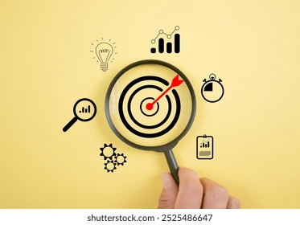
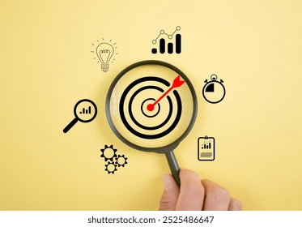

The Power of Focus: An Introduction
 


What is Focus?
Focus is the ability to concentrate on a task, idea, or goal while minimizing distractions. It involves mental discipline, cognitive control, and sustained attention, allowing individuals to work efficiently and effectively.
Why is Focus Important?
- Boosts Productivity: Helps complete tasks faster and with higher quality.
- Improves Decision-Making: Allows for clear thinking and problem-solving.
- Reduces Stress: Minimizes distractions and creates a sense of control.
- Enhances Creativity: Encourages innovative ideas during deep work.
Why Focus Matters
Focus matters because it directly impacts productivity, decision-making, creativity, and overall well-being. In a world filled with distractions, maintaining focus allows individuals to work effectively.
Reasons Why Focus is Important:
- Boosts Productivity: Focused individuals complete tasks faster with greater accuracy.
- Improves Decision-Making: Concentration helps process information more clearly.
- Reduces Stress: Staying present fosters a sense of control and calm.
- Enhances Creativity: Deep focus encourages innovative problem-solving.
- Strengthens Discipline: Training your mind improves self-control and resilience.
Testimonials & Stories
"Integrating focus tools into my daily routine was a game changer—I doubled my productivity and reduced my stress levels significantly." – Jane Doe
"Adopting these focus strategies not only improved my creative output but also made my work more enjoyable." – John Smith
Getting Started
Use the checklist below to assess your current focus levels and identify areas for improvement:
Additional Engagement
Watch this video to see how you can transition from distraction to deep focus: